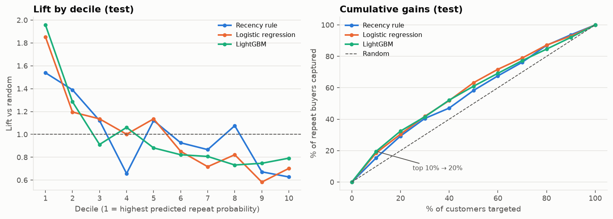
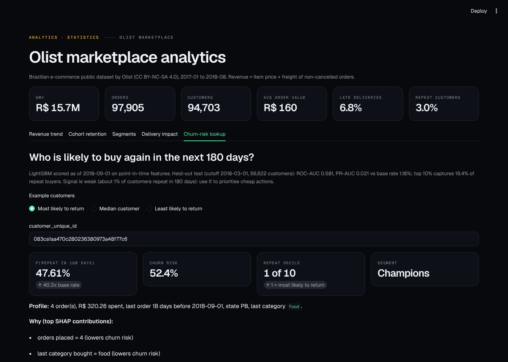

Growth has stalled.
Jan–Aug 2018 GMV was +140% on the same months of 2017, but mean month-on-month growth from Feb to Aug 2018 was −1.0%. Monthly GMV has been flat at R$ 1.0–1.16M.
Evidence SQL 01, 01_eda
Analytics · Statistics2026 · Olist marketplace, 99,441 orders
Portable SQL, causal-minded statistics, segmentation and a churn model on the real Olist Brazilian e-commerce data: 99,441 orders across 9 tables, from Sept 2016 to Oct 2018. It ends with a dashboard, a one-page summary and a recommendation not to launch free shipping as designed.
The dashboard is Streamlit compiled to WebAssembly: the first load takes 10–30 s while Python starts in your browser.
01Key findings
Every number below comes from executed code on the real data: SQL snapshots in results/sql/ and the executed notebooks.
Jan–Aug 2018 GMV was +140% on the same months of 2017, but mean month-on-month growth from Feb to Aug 2018 was −1.0%. Monthly GMV has been flat at R$ 1.0–1.16M.
Evidence SQL 01, 01_eda
Only 3.0% of 94,707 customers ever place a second order. Month-1 retention averages 0.48%, and 30% of second orders are placed the same day as the first (split baskets, not loyalty).
Evidence SQL 02, 10, 12
Late orders average 2.27★, against 4.29★ for on-time orders (−2.02★, 95% bootstrap CI −2.06 to −1.98; Cliff's δ = −0.64, large). With category, state, basket and value controls, the odds ratio for a higher score is 0.068 (95% CI 0.063–0.074).
Evidence 02_stats Part A
The late rate is 21.4% in Alagoas against 4.5% in São Paulo. The single lane SP → RJ accounts for 17.6% of all late deliveries.
Evidence SQL 09, 13
"At-risk big spenders" are 12.4% of customers but 38.6% of revenue (R$ 515 average, about 298 days since their last order). They also have the lowest mean review of any segment (3.95).
Evidence 03_segmentation
With a 1.18% base rate, LightGBM reaches ROC-AUC 0.581 and PR-AUC 0.020 on a later, held-out time window. Targeting the top 10% of customers ranked by the model captures 19.4% of those who actually bought again within 180 days (1.94x lift), against 15.4% for a recency rule. Logistic regression is statistically tied.
Evidence 04_churn
Free shipping on orders from R$ 150. In the simulation it lifts the multi-item rate (+1.43 pp, p = 0.006, P(B>A) = 99.7%), but the freight subsidy costs R$ 9.60 per order against about R$ 1.44 of extra GMV, because 26% of orders already qualify. Do not ship it as designed.
Evidence 02_stats Part B (simulated)



02Notebooks
Rendered from the committed, executed notebooks. CI re-executes them on every push.

03Methods
Being candid about the churn model
Olist's repeat rate is about 3% overall and about 1.2% in a 180-day window, and the data has no browsing or marketing signals. No model here is strong: ROC-AUC is about 0.58–0.59, and the PR-AUC confidence intervals of LightGBM and logistic regression overlap. The model is still useful for ranking cheap retention actions, since its top decile holds about 2x the base rate. It should not be used to justify expensive per-customer offers, and an uplift holdout test should come before any incentive spend.
Honesty notes
d9e4980) on 2026-11-03. CI recomputes them on every push.16 documented queries in sql/, each with its business question, method, expected output and dialect notes.
Each file starts with a header comment giving its business question, method, expected output and dialect notes. Together the queries use JOINs, CTEs and window functions: LAG, LEAD, NTILE, RANK, PERCENT_RANK, ROW_NUMBER, running SUM() OVER, and PERCENTILE_CONT ... WITHIN GROUP.
| # | Query | # | Query |
|---|---|---|---|
| 01 | Monthly GMV, MoM/YoY growth, 3-month average | 09 | State delivery SLA (mean/p90 days, late rate) |
| 02 | Cohort retention by month since first order | 10 | Repeat-purchase rate by cohort quarter |
| 03 | RFM scoring (NTILE) and segment shares | 11 | Basket size vs order value and reviews |
| 04 | Delivery delay buckets vs review score | 12 | Time to second order |
| 05 | Seller performance league | 13 | Late-delivery hot-spot lanes |
| 06 | Category Pareto | 14 | Review sentiment proxies (Portuguese keywords) |
| 07 | Payment mix and instalments | 15 | Customer value deciles |
| 08 | Freight-to-price ratio by category | 16 | Purchase timing (weekday × hour) |
Portability. The same text runs on DuckDB and Postgres. The queries avoid engine-specific functions:
CAST(a AS DATE) - CAST(b AS DATE) rather than DuckDB's date_diff;CAST(date_trunc('month', ts) AS DATE);EXTRACT results are cast to INTEGER, because Postgres returns NUMERIC;ROUND(double, n), which Postgres lacks; rounding happens in the runner;LOWER(...) LIKE instead of ILIKE or regex.The runner turns Postgres NUMERIC into floats and compares every cell with a 1e-6 relative tolerance. CI runs the comparison on the real data.
Reproduce, data licence and deployment notes: the README on GitHub.